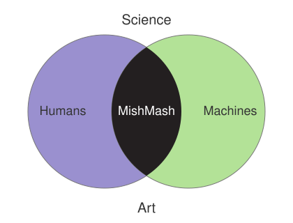
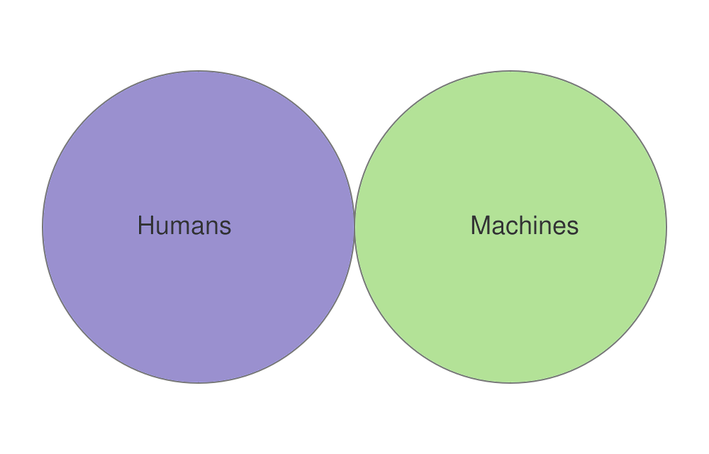
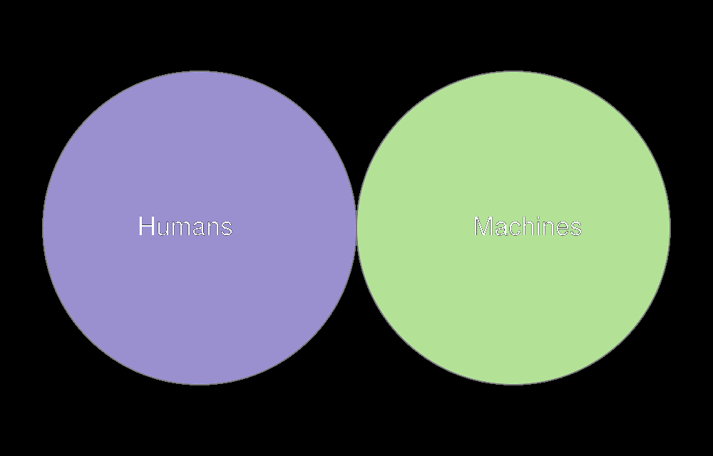
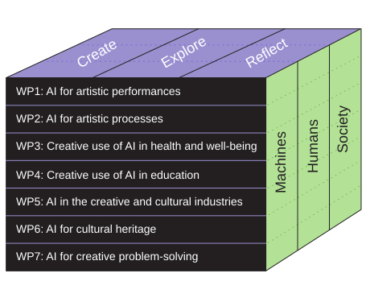
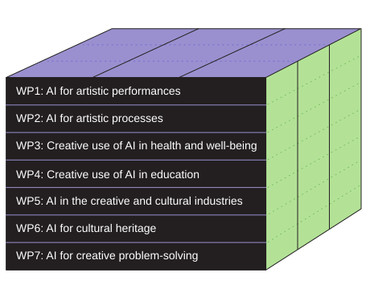
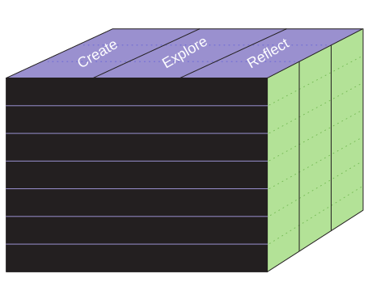
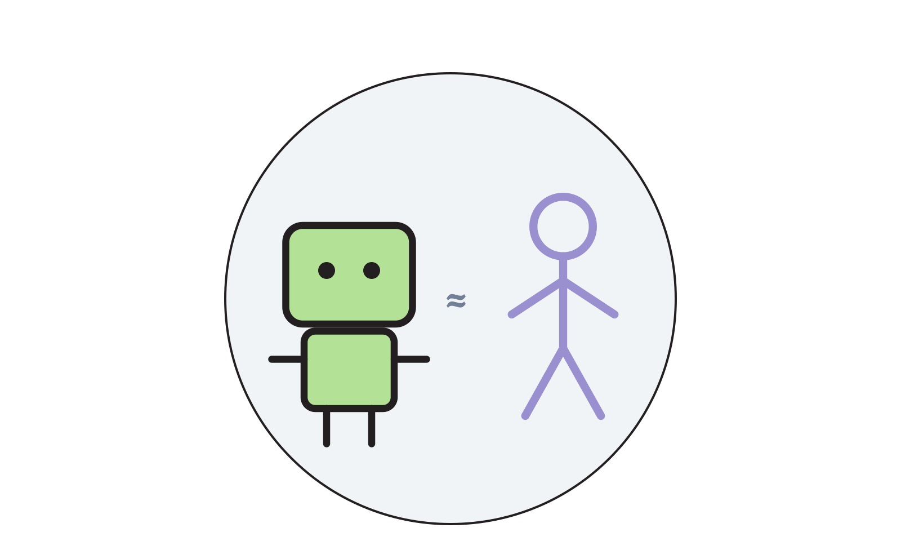
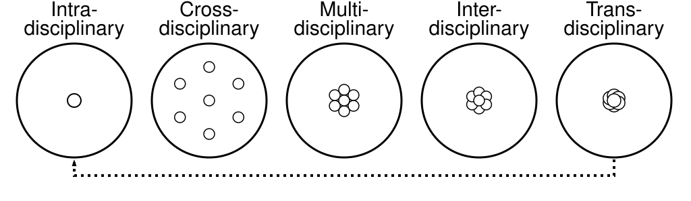

Why?


Threat
- Models trained on artists' work without agreement
- Falling income across the creative sector
- A narrower, more uniform culture
- Energy, water and hardware
Promise
- New instruments, new forms, new works
- Archives that can finally be searched
- Tools in the hands of people without a studio
- Methods that travel out of the arts
mish·mash
noun — a confused mixture.



Definitions
- AI
- The science and engineering of making intelligent machines. McCarthy 1955
- Creativity
- The ability to form novel and meaningful ideas or works. Boden 2004
- Creative AI
- Machine systems that produce results that are novel and meaningful — not random, and not copies. de Vries 2020
- CoCreative AI
- Systems built for genuine partnership, where human and machine contribute to the result. Anscomb 2024
Why start with the arts
They push harder
Artistic use breaks a system in ways benchmark tests never reach.
They ask first
Authorship, consent and ownership arrived in the arts before they arrived anywhere else.
They show the public
A performance or an exhibition puts the question in front of people who will never read a paper.
What?
MishMash will
create, explore and reflect on AI
for, through and in creative practices.
Seven work packages
Create · explore · reflect
CREATE
Making AI-based systems, tools and artworks — and the frameworks and policies around them.
EXPLORE
Using AI in creative practice, and taking creative methods into other fields.
REFLECT
Critically studying what AI does to people, culture and society.
Strings On-Line — self-playing guitars that sense the room. NIME 2020.
How?


The front face: seven themes, one work package each. This is where the disciplines and the partner institutions live.

The top face: the three approaches. Every work package does all three.
Machines · humans · society

Machines
What can these systems actually do, and why? Data, models, limits.
Humans
How do we create with them? Agency, skill, bodies, craft.
Society
What changes when they enter the world? Authorship, law, economy, education.
What it looks like


WP1 — AI for artistic performances
Live music and art where people and machines improvise together.
Kyrre Glette (UiO) · Ivar Grydeland (NMH) · Georgios Marentakis (HiØ)
WP2 — AI in artistic processes
How AI changes the making of film, games, music and visual art.
Budhaditya Chattopadhyay (UiB) · Sashi Komandur (INN) · Synne Tollerud Bull (Kristiania)
WP3 — Creative use of AI for health and well-being
Arts therapies, emotional expression, and what AI does to well-being.
Claire Ghetti (UiB) · Andreas Bergsland (NTNU) · Jonna Vuoskoski (UiO)
WP4 — Creative use of AI in education
AI literacy for schools, higher education and lifelong learning.
Eirik Sørbø (UiA) · Sidsel Karlsen (NMH) · Fredrik Graver (INN)
WP5 — AI in the creative and cultural industries
Copyright, business models, labour and sustainability.
Ragnhild Brøvig (UiO) · Irina Eidsvold-Toien (BI) · Jon Marius Aareskjold-Drecker (UiT)
WP6 — AI for cultural heritage
Opening up archives, libraries and museums.
Ingrid Romarheim Haugen (NB) · Arnulf Mattes (UiB) · Olivier Lartillot (UiO)
WP7 — Human-centric AI for creative problem-solving
From industrial design to emergency response.
Carsten Griwodz (UiO) · Baltasar Beferull-Lozano (SimulaMet) · Kjetil Nordby (AHO)
Who?
MishMash in numbers
Not only universities
Universities and arts academies
Nearly every one in Norway.
Research institutes
SINTEF, Simula, IFE, NILU, NORSUS.
Public sector
The National Library, museums, the broadcaster.
Creative industries
Festivals, labels, film, games, rights organisations.
Freelancers and artists
In this sector a "user partner" can be one person with a practice.
Who creates, who explores, who reflects
Create
Engineers and artists. They build the systems and make the work.
Explore
Educators, clinicians, curators — the people who put the work in front of others.
Reflect
Scholars from sociology, philosophy and law. They ask what it means, and what changes.

Intra, cross, multi, inter, trans. A centre needs all of them at different moments. Jensenius, Sound Actions (MIT Press, 2022)
Ten definitions of noise
Randomness
the mathematician
A fluctuation
the physicist
The unwanted part
signal processing
Material
the sound artist
Disturbance
the philosopher
The signal
whoever is recording ventilation this summer
How it is run
Management
Day-to-day coordination of the centre's activities.
Work package leader group
Leads and two "sidekicks" for each of the seven WPs.
Board
Governance and strategic decisions.
Council
Strategic oversight and partner compliance.
Scientific advisory board
International scientific guidance and evaluation.
Stakeholder board
Representatives from partner organisations.
mishmash.no/about/organisation/
Where?
All over the country
Wherever you are, a partner is close
Nearly every Norwegian university and arts academy.
- Each WP: one lead institution, two sidekicks elsewhere
- Open to partner institutions and the unaffiliated
- Seed funding for projects that cross partners

The institution network, generated from mishmash.no
Mostly virtual, regularly physical
Every week
MeshUp — online, Thursdays 12:00–12:30. A short talk and a discussion. Open to everyone.
Every other week
Work package check-ins.
Every month
Thematic seminars and public workshops.
Twice a year
Conferences and symposia, touring Norway — talks, performances and exhibitions in one programme.
Seven international partners
mishmash.no/institutions/
When?
A five-year centre
The first year


What is coming
35 new fellows
PhDs and postdocs starting across the consortium, in every work package.
Seed funding
Announced internally on a regular basis, for smaller cross-partner initiatives.
Two conferences a year
Touring Norway, with performances and exhibitions alongside the talks.
mishmash.no/events/ · mishmash.no/projects/
Join?
How to take part
Come to a MeshUp
Online, Thursdays 12:00–12:30. A talk and a discussion. Open to everyone, no registration.
Become a member
Sign up for one or more work packages. Free. Open to researchers at partner institutions and to the unaffiliated. Write to contact@mishmash.no.
Come to a conference
Two a year, touring Norway. Talks, performances and exhibitions in one programme.
Apply as a master fellow
Master's students at affiliated institutions can apply to become a MishMash Master Fellow.
The website is part of the research
- Profiles generated from NVA, or ORCID from abroad
- Three reading levels — short, standard, advanced
- Automatic Norwegian translation
- Every page: editor, licence, privacy, accessibility
- Public on GitHub
Every file
An explicit licence and privacy level on every file — not the project, not the folder.
mishmash.no/about/ai-colophon/
Centre for AI and Creativity
mishmash.no

contact@mishmash.no · MeshUp Thursdays 12:00
Working in the open
Everything is a repo
The website and this deck are both public on GitHub. github.com/MishMash-Norway
Made with agents
Text, tooling and translation drafted with AI assistance and reviewed before publishing. Traceable in the commit history.
Declared, not hidden
An AI colophon says where AI contributes, so nobody has to guess. mishmash.no/about/ai-colophon/